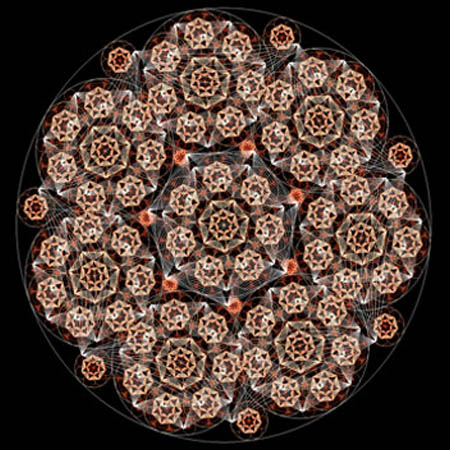
A collection of projects and sketches that make use of computational techniques in architecture - whether for form-finding and optimisation, design iteration and simulation, or simply data visualisation. Concocted primarily using Grasshopper and custom C# components. Many make use of Impala to boost performance during rendering and analysis stages.
[-] Animations and Simulations
A collection of experiments in animating using different techniques implemented from scratch and making use of Grasshopper as a rapid visualisation and iteration environment. They represent everything from pulsating mathematical functions to an attempt to imitate biological techniques in code. Many of them make use of Andrew Heumann's wonderful Human plugin for Grasshopper as a drawing utility.
[-] Curl Noise Diffusion
[-] Detail Sensititve Mosaic
[-] Synthetic Growth Simulation
[-] 4D Function Visualisation
[-] Particle Collision Simulation
[-] Fractal Experiment
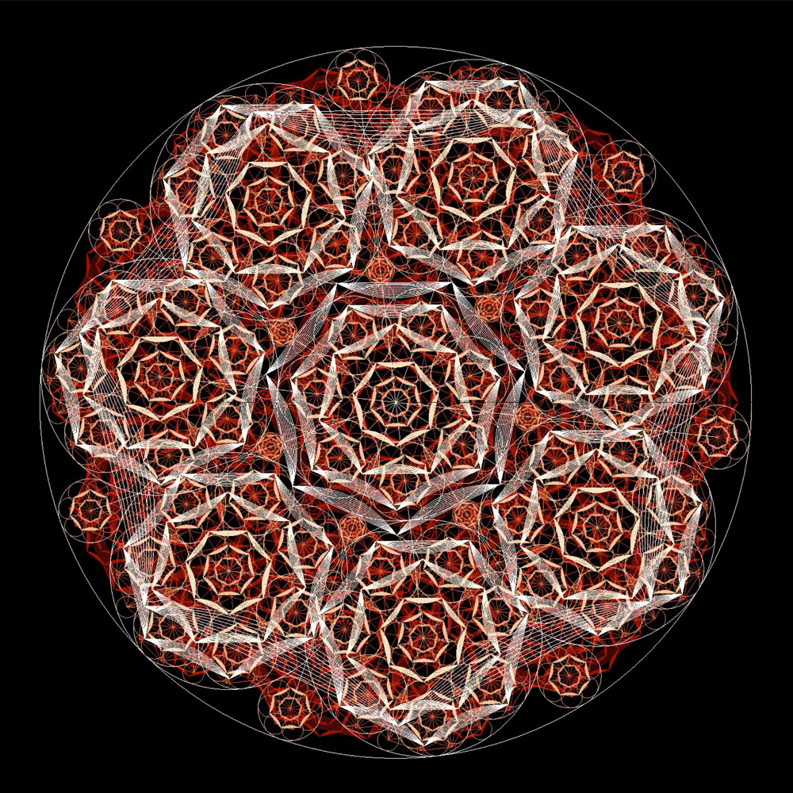
[-] Swarm - Computational Garden
As a one-week design build exercise, we devised a parametric paneling system that attempts to panelise an arbitrary surface with planar hexagonal panels. These panels are then used as the basis for a two-layered tectonic system, which makes use of parametric joints to create an optimal fit. The structure plays host to a swarm of vines and wildlife. We envision this both as an urban installation and as a waist-height furniture piece.
Collaboration with Jonathan Cheng, Shariwa Sharada, and Eric Chen.
[-] Structure and Assembly
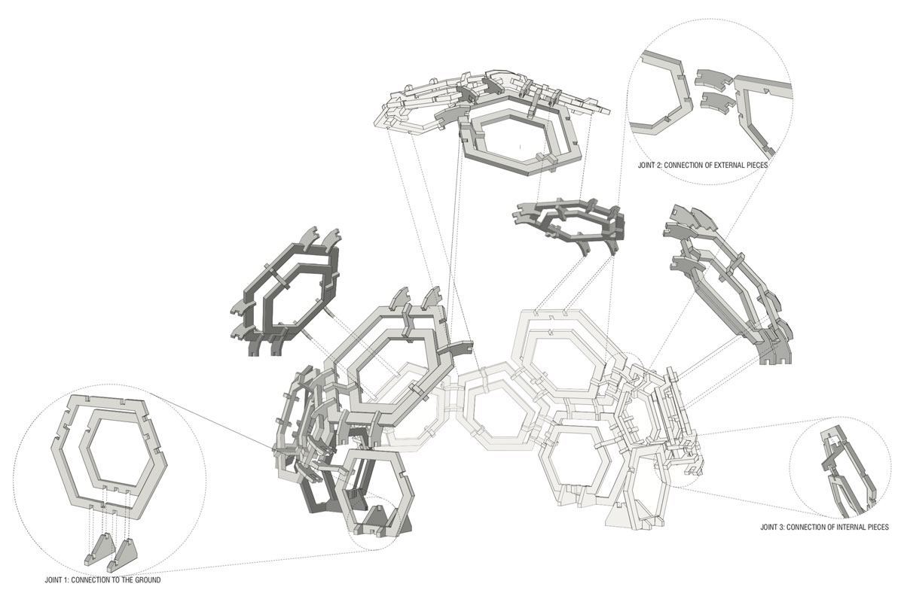
[-] Personal and Urban Scale Concepts
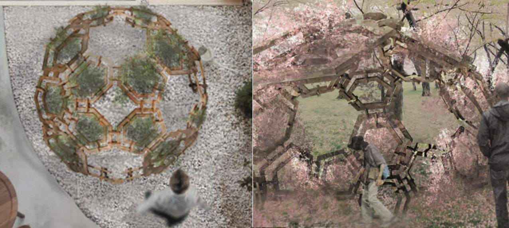
[-] Parametric Iteration on Conic Surface
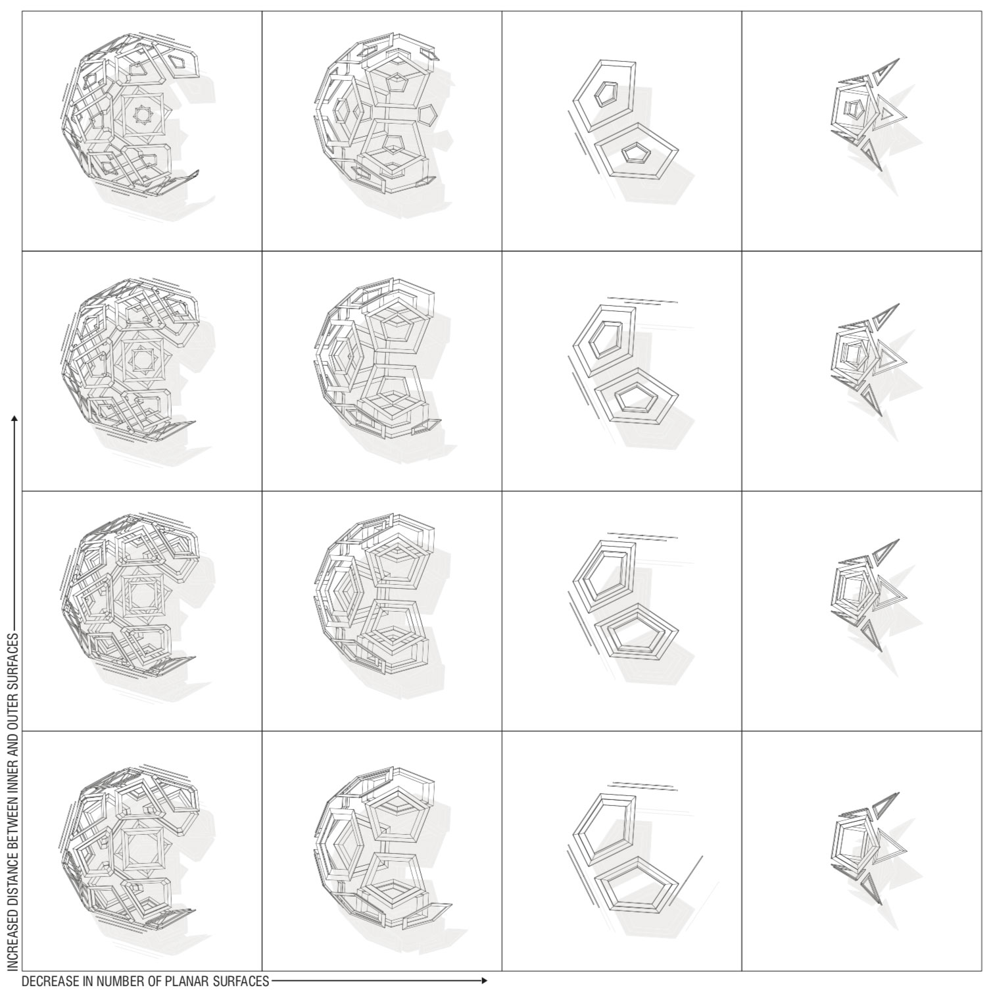
[-] Drawings and Cut Sheet

[-] Model - Overview

[-] Model - Surface Patterning

[-] Solar Pavilion
One-off Grasshopper sketch working with solar angle data to define aperture width, which reverse-solves to a rotation angle for a number of structural members. The structure can then adjust its apertures based on sun position while maintaining physically correct form.
[-] Structure Overview
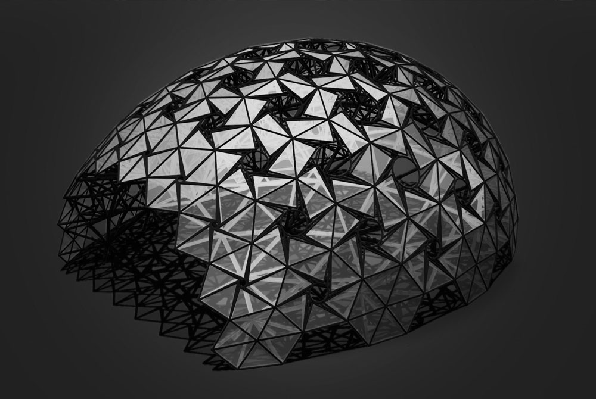
[-] Experiential Rendering
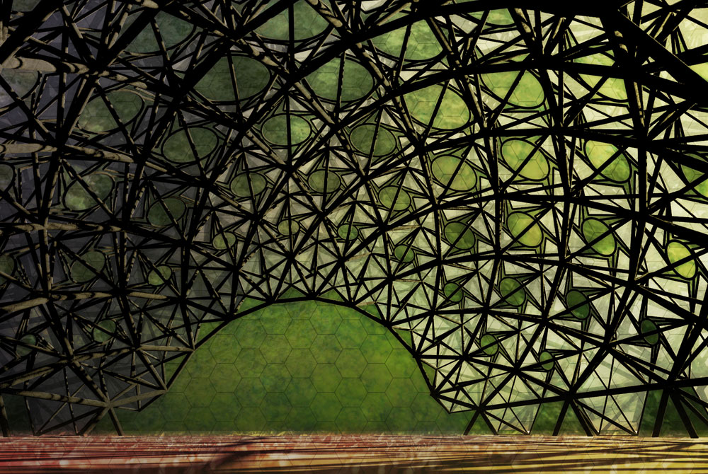
[-] Conic Structures
An exercise in geometric construction and parametric iteration to derive a structured system based off of a single conic system element. In this case, the entire form is defined from a single parabola and its derived manipulations. Later discretised and iterated.
Collaborative with Christina Brown.
[-] Geometric Construction
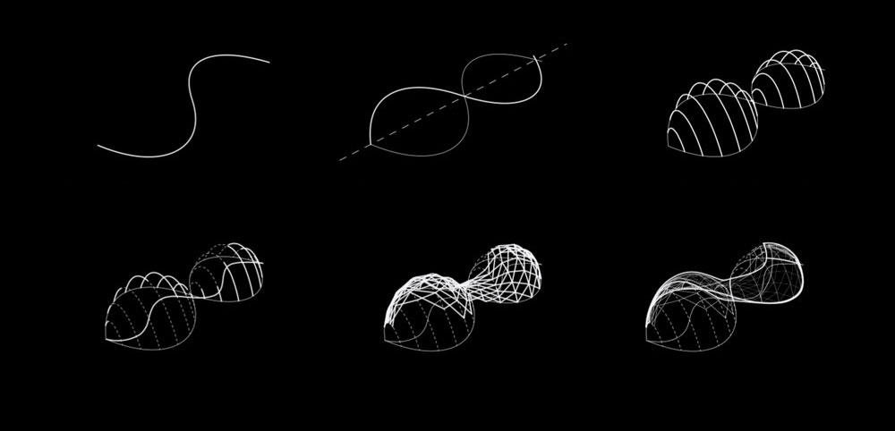
[-] Parameter Iteration
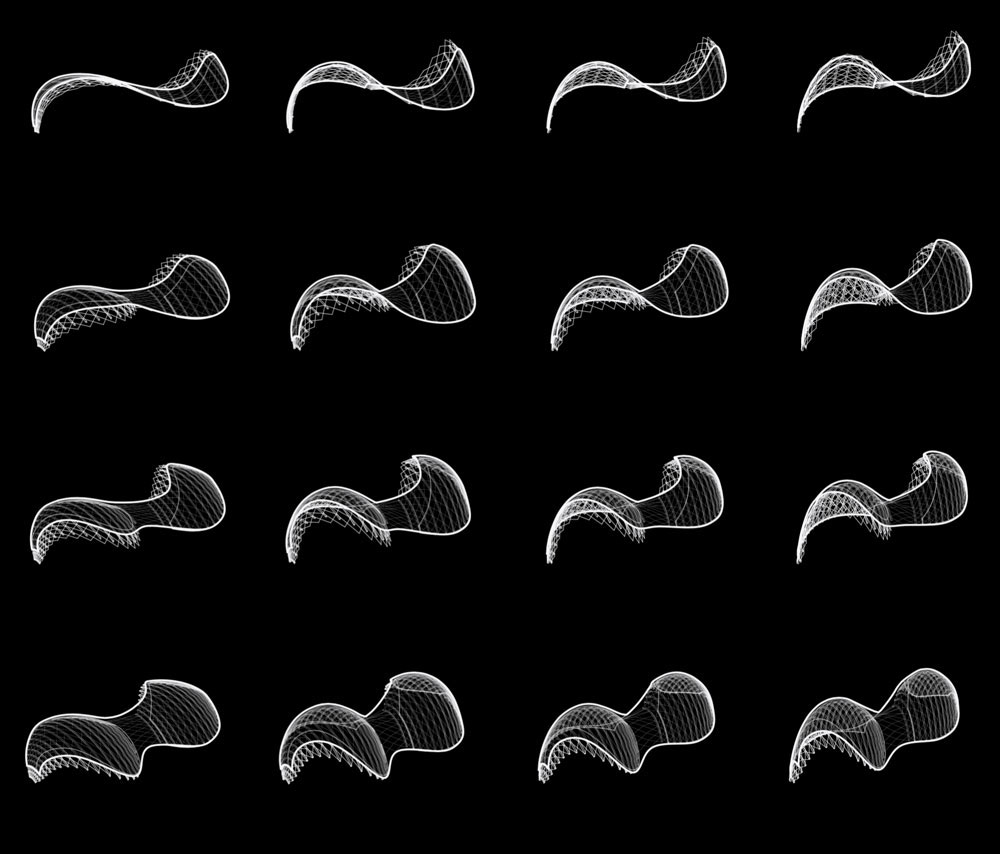
[-] Resolved Structure
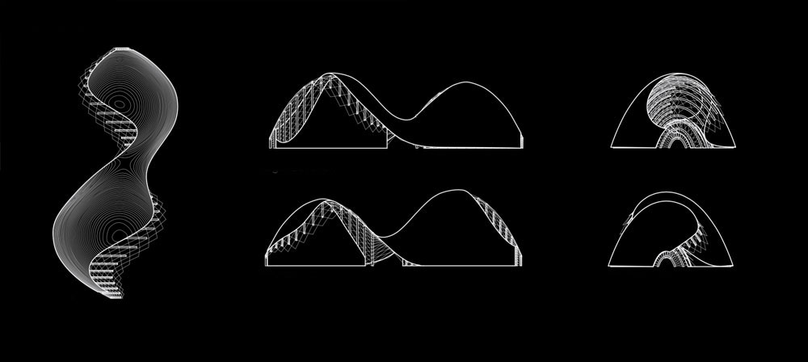
[-] Permeable Membrane
One of my first one-off Grasshopper sketches, demonstrating the power of the native toolset to react to both internal and external data in order to define a pattern. Uses noise function to define surface, and creates tesselation responsive to curvature.
[-] Pattern Overview
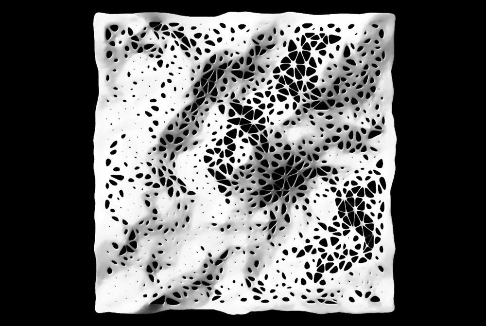
[-] Sectional Variation
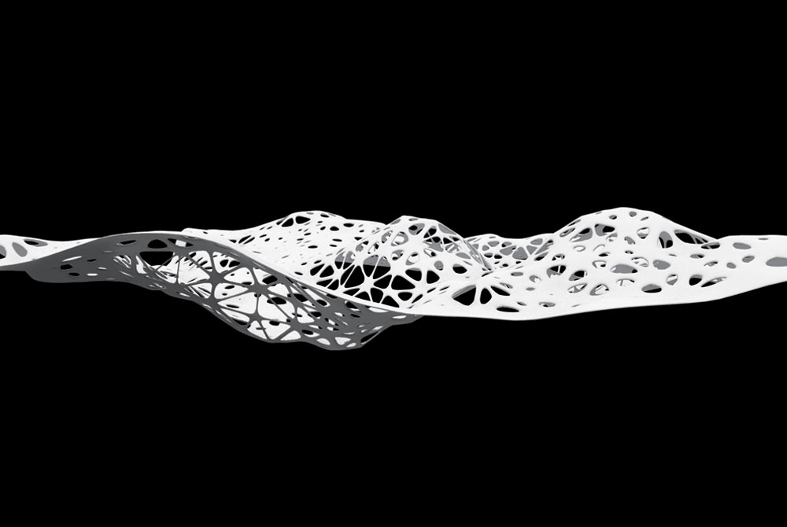
made with love and html. © Dan Cascaval 2017.